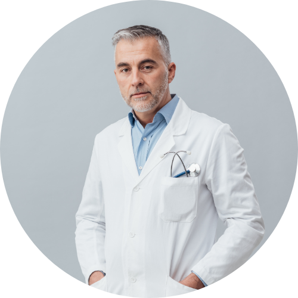

Dr. Franco Murillo
 Ver Perfil en Linkedin
Ver Perfil en Linkedin
- Médico Cirujano por la Universidad
Nacional Mayor de San Marcos. - Especialista en Cirugía Plástica, Estética y
Reconstructiva por la Universidad Nacional
Mayor de San Marcos. - Subespecialista en Armonización Facial y Corporal,
con entrenamiento en técnicas mínimamente
invasivas y procedimientos estéticos avanzados. - Participación en cursos internacionales de
actualización en rejuvenecimiento facial,
contorno corporal y medicina estética.